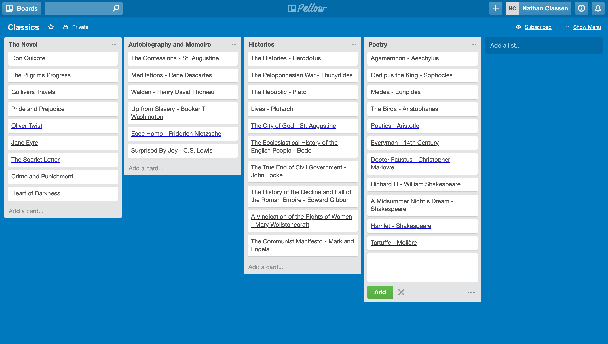
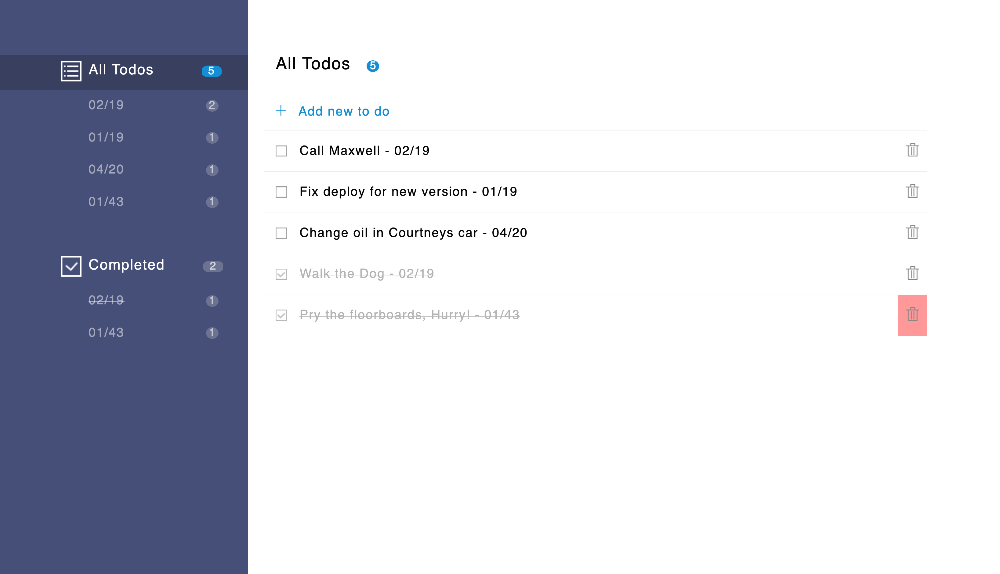

Building great software on the cloud is technically interesting and highly rewarding. Which is why I am exited about Bento.
Bento is a blazing-fast serverless video transcoding pipeline.
Bento is built on Amazon Web Services, the most popular cloud platform in the world. Using AWS Lambda, Bento
takes advantage
of the instant scale and concurrent execution of function as a service architecture to
parallelize the video transcoding process. Videos are pulled into hundreds of small, quick to transcode
segments and then stitched back together, resulting in lightning fast transcoding jobs.
We've made it easy for small businesses to deploy Bento to their AWS account and launch the dashboard to
upload, transcode, and download all of their videos while maintaining control over their content.
Take a look at our detailed case study to read about some of the engineering challenges of building event
architectures
other work
-

Pellow is project management software built with React/Redux and Rails on the back-end
-

Check_ An organizational tool and task managing application built with Ruby/Sinatra, PostgreSQL, and Handlebars.js
-

SimpleContact is a lightweight contact managing application built with Node.js and Express